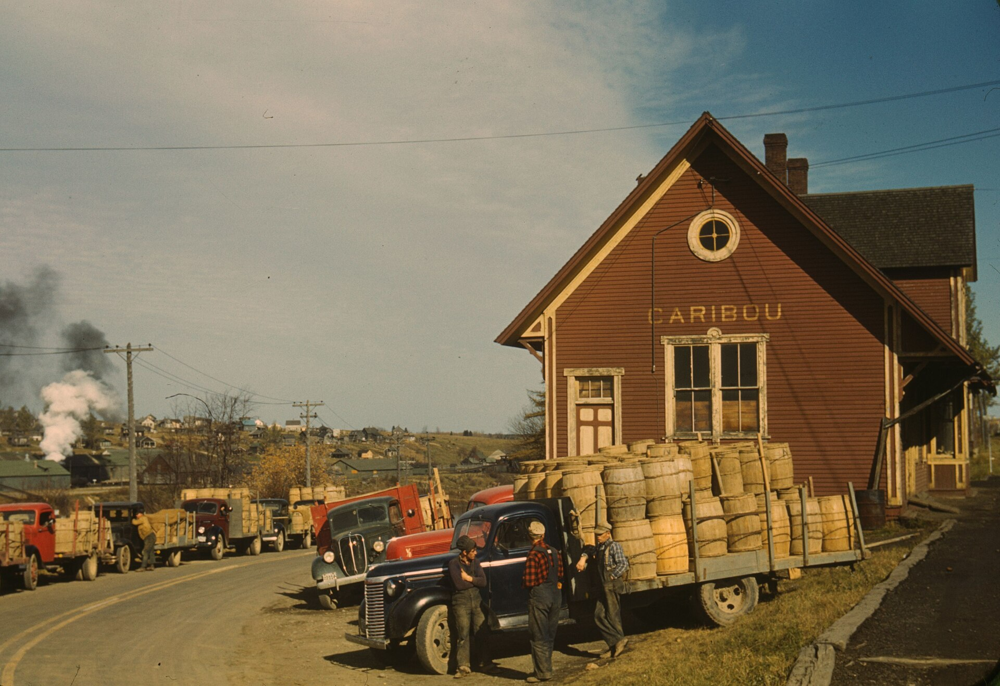
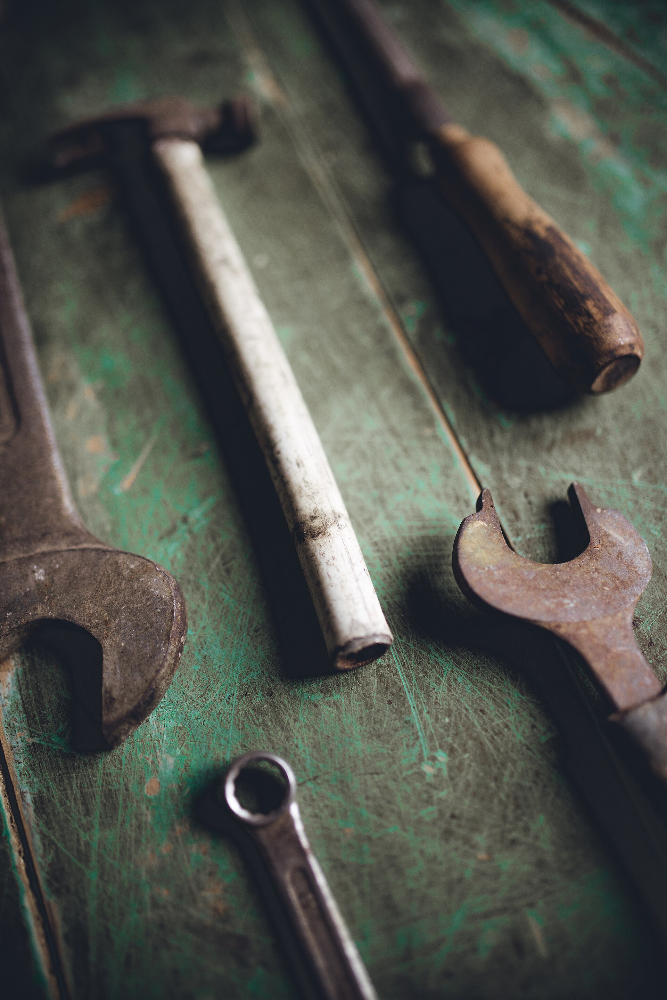
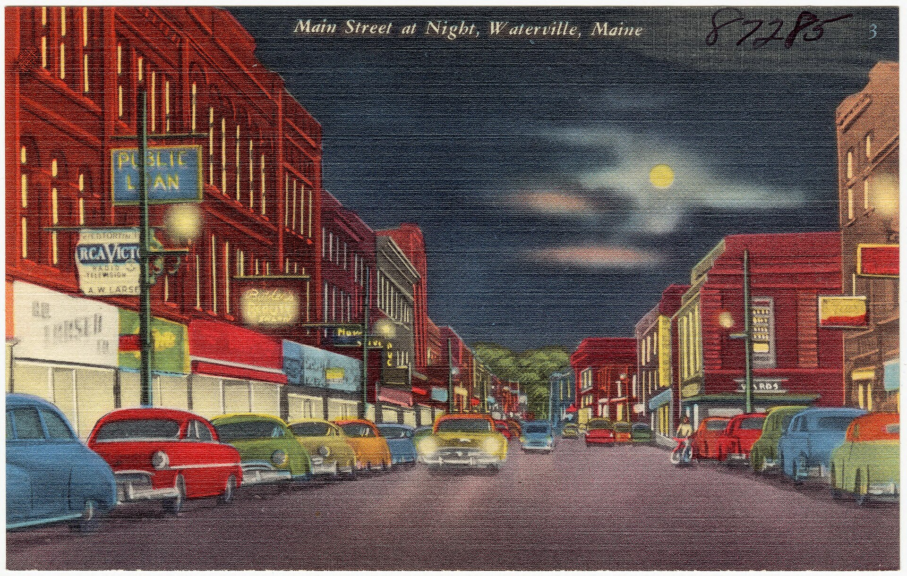
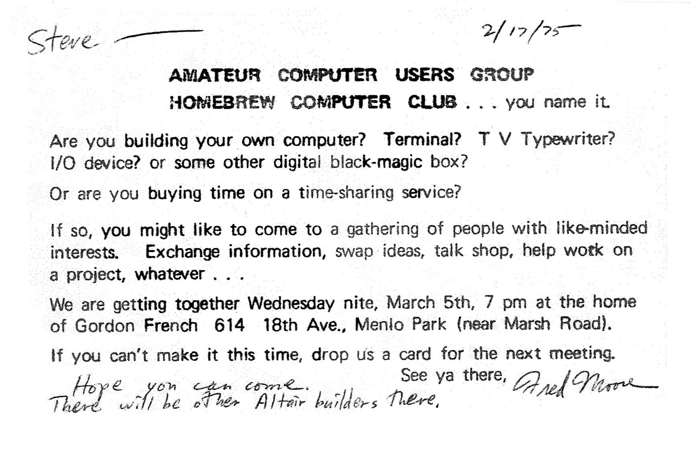

The six things, live
From 0:00Quick real demos from shops like yours. Ten minutes each, nothing to install, nothing to buy.

Free. Second Tuesdays, 10 am, Waterville, and a table once a month in Portland.
Save a seatNobody leaves with homework. Six quick demos from shops like yours, then everyone names the one task eating their week, and someone sits with you until it is done.
Quick real demos from shops like yours. Ten minutes each, nothing to install, nothing to buy.

Everyone names the one task eating their week. An estimate, a review reply, a stack of receipts, the email you keep putting off.
Pull out the real thing. Someone sits with you until it is done, on your laptop or just your phone.
Everyone answers one question: what would you actually try? Then the coffee urn, and the door.

Real tasks from real shops, each about ten minutes to try. Every slip ends with a prompt you can steal: copy it, paste it, see what comes back.
“Rewrite this message so it is friendly but firm, and shorter: [paste it]”
“Here is a one-star review. Draft a calm reply that owns the mistake and offers a fix: [paste it]”
“Write 8 Facebook posts for a [your business] in [your town]. Plain local voice, no hashtag soup.”
“Turn these receipt photos into a list with date, vendor, amount, and category.”
“Compare these two quotes in a table and tell me what questions to ask before I sign.”
“Plan five weeknight dinners a picky ten-year-old will eat, with one grocery list.”
Small-business owners using AI more than doubled from 2023 to 2026: from under a quarter of owners to more than half, in the U.S. Chamber of Commerce surveys.
Sources: U.S. Chamber of Commerce, the Chamber Foundation with Ipsos, and Intuit QuickBooks owner surveys, 2024 to 2026. Big companies can afford a back office. AI hands that same back office to anyone with a truck, a storefront, or a license.
The whole circuit through April, with every past table, is on the map.
No. No tiers, no tickets, no gate. The recipes are free and they always will be. Commerce grows out of community, not the reverse.
Anyone with a truck, a storefront, or a license. Electricians, oil companies, landlords, video people, bookkeepers, the person who runs the front desk. Same wrenches, same trucks, big-company margins, with your name still on the door.
A laptop or just your phone, and one real task that is eating your week. Not a question about AI, the actual estimate, review, lease or receipt pile.
No vendors pitching from the podium, ever. Demo slots are earned, never sold, and every demo has to answer one question first: what did this change for you?
Everyone answers one question: what would you actually try? Come once and you are a member. Your key to the clubhouse is handed out at the table.
In March 1975 a typed invitation went up on bulletin boards around Menlo Park: are you building your own computer? Come swap ideas, talk shop, help work on a project. That club gave away what it learned, and the personal computer came out of it. This one gives away what it learns about AI, in Maine, a table at a time. Give to help others.

Either way it is free, and a person writes back.